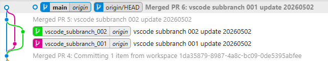
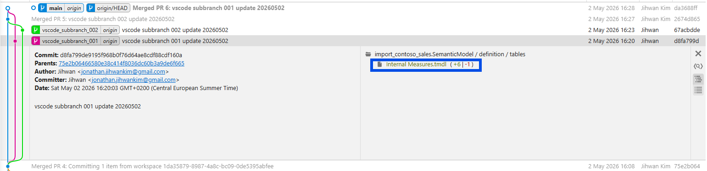
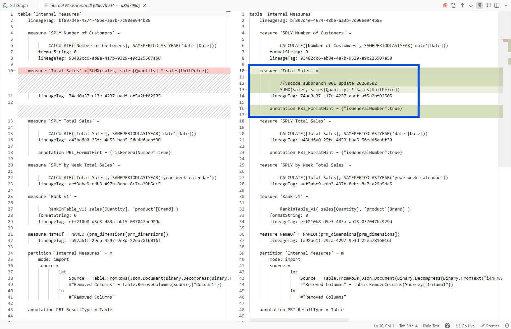
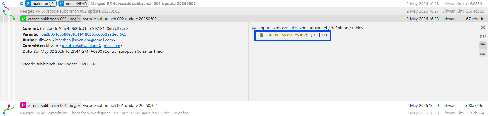
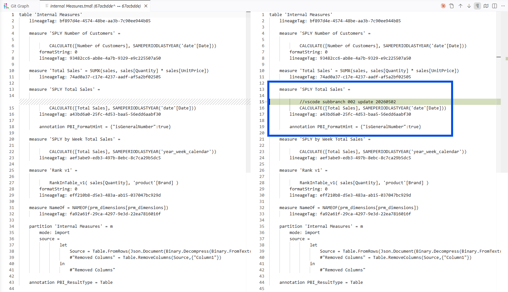

In this writing, I want to share how a deliberate conflict experiment in a Power BI project repository merged cleanly anyway, and what I learned about when and what in Power BI source control made that possible.
I didn't expect a deliberate conflict test to merge cleanly. My plan was simple. Create two branches off main. Have each branch edit the same Internal Measures.tmdl file. Open PR1 and merge it. Open PR2 against the updated main. Watch PR2 fail with a merge conflict. Instead, both pull requests merged automatically, and I sat staring at a green check mark asking myself "why didn't the second PR fail?" The answer changed how I think about the whole Power BI source-control workflow.

1. The Setup: Two Branches, One TMDL File, Two Different Measures
The repository is a PBIP project of the Contoso semantic model, with the model definition stored as TMDL under import_contoso_sales.SemanticModel/definition/. I created two feature branches off main.
Branch vscode_subbranch_001 edited the Total Sales measure inside definition/tables/Internal Measures.tmdl. I added a comment, reformatted the expression onto multiple lines, and added a format-hint annotation. The commit hash was d8fa799.


Branch vscode_subbranch_002 edited the SPLY Total Sales measure in the same file. I added a single comment line above the CALCULATE(...) expression. The commit hash was 67acbdd.


So both branches modified the same file. The difference is each branch modified a different DAX measure inside that file. By my pre-test mental model, two writers, simultaneous edits, same filename, that should have ended in a collision on the second PR.
2. The Result That Surprised Me: Both PRs Merged Cleanly
I merged PR1 first. Standard, no surprises. Then I opened PR2 against the updated main, expecting Git or the Git provider to flag the file as conflicted. It didn't. PR2 reported as mergeable, the merge ran, and the post-merge Internal Measures.tmdl contained both edits side by side.
I genuinely paused. The screenshot at the top of this post was the moment I sat back and asked myself "something improved? when, and what?" That is the question this post is built around.
3. The First Surprise: "Same File" Wasn't Enough to Cause a Conflict
"Two branches editing the same file at the same time" still felt like a guaranteed collision when I designed the experiment, and I expected the second PR to fail.
The Microsoft Learn page on Resolve Git merge conflicts tells me, in plain terms, why my intuition was off. The first paragraph of the Resolve Git merge conflicts page introduction (right under the article title) states the rule directly. A merge conflict happens when both branches edit the same file line differently, or when one branch modifies a file and another deletes it. The boundary is the line, not the file.
Reading that sentence after seeing my green-checked PR landed harder than I expected. My two branches did edit the same file. They didn't edit the same lines. By Microsoft's own description of when Git raises a conflict, the second PR was never going to fail.
The picture for my experiment specifically: Branch 001's edit landed inside the Total Sales measure block of Internal Measures.tmdl. Branch 002's edit landed inside the SPLY Total Sales measure block, a few lines further down in the same file. Two different measures, two different sets of changed lines, no overlap. Git compared both branches against main, found nothing competing for the same lines, and combined them into a single merged file.
This is the difference between "same file" (true for both branches) and "same lines inside the file" (false). The intuition that same file equals conflict persists even when you have lived in the PBIP world for two years. The reason it persists is that "same file" is the unit Power BI shows you. Power BI Desktop opens, edits, and saves at the file level. The PR view in GitHub or Azure DevOps shows the changed files in the left pane before you click into the line-by-line diff. Even Git itself names commits by which files changed. The file is the visible object in every tool we touch, so when we picture "two developers editing the same thing," the picture our brain reaches for is two writers fighting over the same file. The line-level reality is invisible until you look one layer deeper. Git always operated at that deeper layer; my intuition just had not caught up.
4. The Aha Moment: Each TMDL Measure Sits in Its Own Block of Lines
Here is the aha moment that finally rewired my intuition: inside a TMDL table file, every measure occupies its own clearly bounded block of lines.
A useful way to picture a TMDL table file is as a list of measures laid out one after another, like rows in a notebook. Each measure starts with measure 'Name' = ... on its own line and continues until the next measure begins. That visual structure is what gives Git the anchor points it needs to tell two different edits apart.
In my experiment, the Total Sales block sits in the upper part of Internal Measures.tmdl. The SPLY Total Sales block sits below it. Branch 001 edited lines inside the Total Sales block. Branch 002 added one line inside the SPLY Total Sales block. The two edits live in two different blocks. From Git's perspective, the two changes are as independent as if they had been in two different files.
The reason TMDL has this shape (one file per table, one line block per measure inside the file) is not an accident. The Tabular Model Definition Language (TMDL) overview page on Microsoft Learn explains it directly. The fourth bullet of the intro list at the top of the article names TMDL's folder representation, with each model object getting its own file, as the reason TMDL is more source-control-friendly than the alternatives. The TMDL folder structure section of the same article shows the actual layout: tables/Sales.tmdl, tables/Customer.tmdl, tables/Product.tmdl, one file per table.
The Power BI Desktop project semantic model folder page on Microsoft Learn is even more pointed about exactly the case my experiment ran into. The TMDL format section of that page opens by stating that the goal of TMDL is a better source-control and co-development experience. The second paragraph of the same TMDL format section contrasts TMDL against the older "big JSON file" representation (TMSL) and names the per-table, per-perspective, per-role, per-culture file split as the property that produces good Git diffs and clean merges.
That is Microsoft saying out loud the property my experiment quietly demonstrated. TMDL was designed for this case.
5. When Did This Improve, and What Specifically?
The improvement is the file format, not the merge tool. Two changes in Power BI Desktop made my experiment possible, and both are anchored in Microsoft's own documentation.
The first change is Power BI Project (PBIP), the save format that turns a Power BI project from a single .pbix file into a folder of plain text files. The Power BI Desktop projects (PBIP) overview page on Microsoft Learn carries an Important callout right at the top of the article that names PBIP as currently in preview. The top benefits bullet list immediately below that callout names PBIP as text files designed for Git, with version history and team collaboration as direct outcomes. A later bullet in the same list calls out CI/CD on top of source-control systems as a supported scenario.
The second change is TMDL as the semantic-model file format inside PBIP. The PBIP semantic model folder page on Microsoft Learn explains in its Enable TMDL format Preview feature sub-section that TMDL is opted in via Preview features in Desktop. So both PBIP and TMDL are still in preview at the time of writing, even though both have been usable in real projects for a while.
There is one practical detail that comes up the first time you run a real conflict test of your own, and it is worth separating from the measure-block point above. The line-block insight is about which lines you edit. The CRLF issue is about how each line ends. They are unrelated, but the second one can ruin the first.
Every text file ends each line with one or more invisible end-of-line characters. Windows tools (including Power BI Desktop) write CR + LF at the end of each line. Many Git workflows or non-Windows tools use LF only. If two systems touching the same file disagree on those invisible characters, Git can mark every line in the file as changed, even when the visible content is identical. That is not a TMDL or PBIP problem. It is a generic Git-on-Windows problem that hits any text file.
The PBIP overview's Considerations and limitations section flags this directly and recommends configuring Git's autocrlf setting so your diffs reflect actual edits rather than line-ending churn. If you skip that step, you may open a PR in your conflict test and see hundreds of "changed" lines that you never touched, which would mask the real measure-level changes you were trying to study. Worth setting once, at clone time, before you run any real test of your own.
The Fabric side of the story rounds out the picture for teams pushing into a workspace. The overview of Fabric Git integration page lists Semantic model and Report under its Supported items → Power BI items sub-list, both marked preview. The intro bullet list at the top of that page describes the goal plainly: collaborate with others or work alone using Git branches, and apply familiar source-control practices to Fabric items.
Putting the three layers together gets you to where my experiment landed. PBIP turns the project into text. TMDL splits the semantic model into one file per table with one block of lines per measure. Fabric Git integration syncs the workspace to and from a real Git branch. With those three in place, two developers editing two different measures of the same TMDL file is a clean merge by default.
6. When You WOULD See a Conflict
Knowing why my test merged cleanly only matters if I also know what it would take to make a real conflict happen. Here are the patterns that would have produced one.
Same measure, same line, two different rewrites. If both branches had changed the formula of Total Sales to two different DAX expressions, Git would mark the line as conflicted and ask which version to keep.
Same lineageTag regenerated to two different GUIDs. TMDL stores a lineageTag per object. If both branches regenerated the same tag to different values, the line is the same, the values differ, and Git stops to ask.
Two new measures of the same name on the same table. Even if the two new measure declarations were inserted into different parts of the file, the second merge would land a duplicate-measure-name in Internal Measures.tmdl. Git might combine the text without complaint, but Power BI Desktop or the Fabric Git sync would refuse to load the resulting model.
One shared model.tmdl setting changed two different ways. If two branches each set defaultPowerBIDataSourceVersion to different values in model.tmdl, that single line is owned by both branches. Conflict.
The pattern is consistent. Conflict is a same-line-region property; non-conflicting parallel work is the absence of line-region overlap. Knowing this lets a team plan their feature branches around different measures, different tables, different perspectives, and merge with confidence.
7. From a DevOps Standpoint: This Is Foundational
From a DevOps standpoint, this is foundational. The whole point of source-control-friendly file formats is that the practices software teams have used for two decades now apply to semantic models, too.
Code Review
Pull-request review on TMDL diffs is human-readable. The PBIP semantic model folder page's TMDL format section explicitly frames TMDL as designed for human-friendly reading and editing in any text editor. A reviewer can read a measure-level diff and approve, comment, or request changes the same way they would on backend code.
Parallel Development
My experiment is the example. Two developers, two measures, one file, two clean merges. The era of single-binary .pbix, when only one writer could touch the file at a time, required serialization of work even when the work was logically independent. PBIP plus TMDL removes that serialization for the cases where the edits don't overlap.
Validation
Because the model lives in text files, a CI hook on commit can run a Tabular Editor Best Practice Analyzer rule set, a custom validation script, or any line-aware linter. The PBIP overview's top benefits bullet list, "CI/CD support" bullet calls out CI/CD on top of the file representation as a first-class scenario. None of this was practical against a binary .pbix.
Repository Hygiene
TMDL emits a stable, deterministic ordering of objects so the same model, serialized twice, produces the same file. The TMDL overview's Object references → Deterministic collection ordering sub-section is what makes that guarantee. It is what stops your repo from filling up with churn diffs that have no semantic meaning.
Closing Thoughts
This experience left me with a new mental model: the file format is the source-control feature.
PBIP turned a Power BI project from a binary into a folder of text. TMDL turned the semantic model from a big JSON document into a folder of per-object files. Together they are the reason my deliberate conflict test merged cleanly. Same Git, same provider, same workflow as before. Different file format. Different result.
Both PBIP and TMDL semantic-model format are still in preview at the time of writing, so the usual preview-feature caveats apply. I would still build real feature work on top of them today. The reason is simple. The only alternative is going back to the binary .pbix workflow, where there is no Git history, no parallel feature branches, no PR review of measure changes, and no clean merge of two developers' work. A preview feature with all of those is a better trade than a generally available format with none of them.
I hope this helps having fun in exploring PBIP and TMDL, and embracing this new era of Power BI source control where two developers can work on the same model file in parallel and trust the merge!